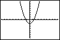
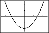
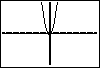
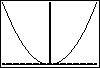
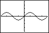

| HOME >> Tutorials >> Tutorial 26: Changing Zoom |
Introduction:
This tutorial is somewhat similar to the previous one, but this time we are going to be changing the zoom. Changing the zoom usually occurs in math programs when it involves drawing graphs. Once again, although this tutorial may not be helpful for creating games, it should be help for making math or science programs.
New Commands:
| Zoom In | Zooms in on the graph |
| Zoom Out | Zooms out on the graph |
| ZoomFit | Fits the current graph in the viewing window |
| ZStandard | Sets the window variables to their default values |
| ZTrig | Sets the window variables to preset values for plotting trig functions |
The Code:
There will be one set of code that will cover all of the 5 zoom commands. There's really no special way of using them. The code will just show you what each one of them does.
| : | For AShell, SOS, and TI-Explorer |
| FnOff | Deselects all the Y= functions |
| ClrDraw | Clears the graph screen of all drawings |
| "X²-2" |
Stores the equation "X²-2" into Y1 |
| ZStandard | Sets window variables to their default values |
| Pause | Suspends program and waits for use to press |
| Zoom In | Zooms in on the graph |
| Pause | Suspends program and waits for use to press |
| Zoom Out | Zooms out on the graph back to the regular viewing window |
| Pause | Suspends program and waits for use to press |
| Zoom Out | Zooms out on the graph |
| Pause | Suspends program and waits for use to press |
| ZoomFit | Fits the current graph in the viewing window |
| Pause | Suspends program and waits for use to press |
| Degree | Sets degree angle mode |
| "3sin(X" |
Stores the equation "3sin(X" into Y1 |
| ZTrig | Sets window variables to their default values |
|  press |
 press |
press |
|  press |
 press |
 |
Further Explanation:
Basically, what this code does is draw the quadratic equation X²-2 in the regular viewing window, using ZStandard. Then it zooms in on the graph using Zoom In. Next, using Zoom Out, it zooms out back to the regular viewing window and zooms out again. Using ZoomFit it fits the entire quadratic in the viewing window. The only problem with ZoomFit is that it doesn't put the Y-axis where it should be. It puts it at the bottom of the graph. Finally, the calculator is changed into Degree mode, a new equation is stored into Y1, and the graph is displayed using the ZTrig command. The most highly used zoom command is ZStandard. Not only is it used in math programs, but sometimes also in games. In fact, if you can remember back in Tutorial 18, we had to set the window variables to what ZStandard automatically does when we were drawing tangents and inverses of functions. You may have already noticed this, but there isn't a "DispGraph" that follows any of the zoom commands. This is because none of the zoom commands needs a DispGraph to follow them. DispGraph is already built into the commands. The zoom commands set the window variables and then display the graph.
Conclusion:
What you really need to take from this tutorial is how to use ZStandard because it is the zoom command that you will use more often. You still should know what the other zoom commands do, but ZStandard is the most important. In the next tutorial, we will move away from creating math programs, back to creating games, which I'm sure you'll enjoy. Tutorial 27 covers using lists in games.
If you do not understand a particular part in this lesson, have suggestions, or find any problems please contact me.
 |
 |
| Tutorial 25 | Tutorial 27 |